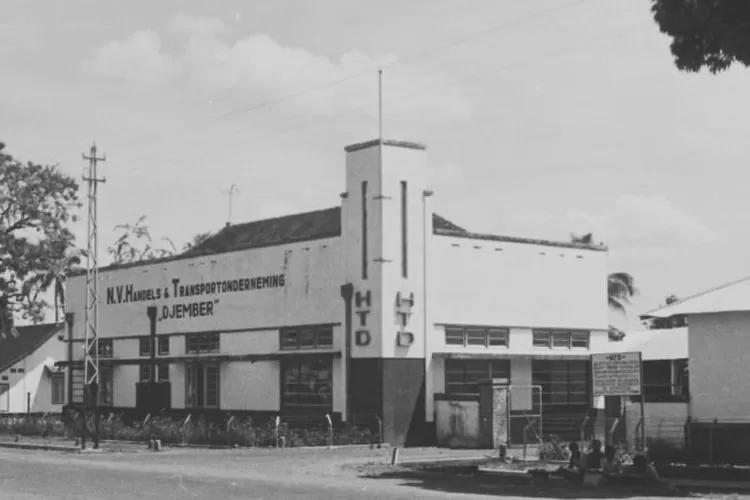
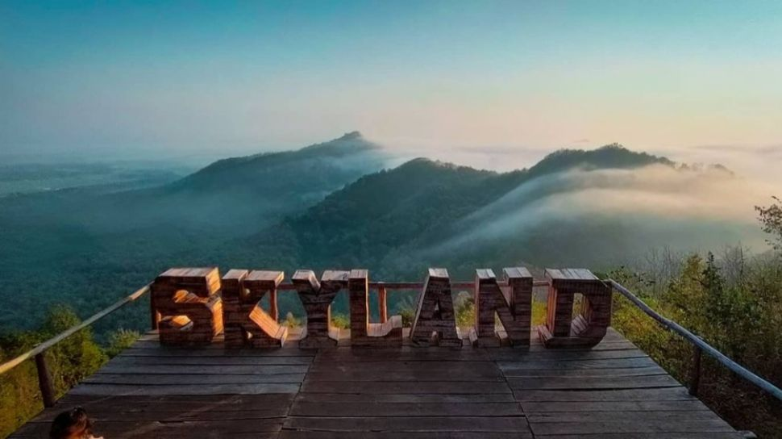

Sejarah

Dalam Kajian Toponimi Kabupaten Jember tahun 2015, nama Jember berasal dari gabungan kata Jembhar bahasa Madura dan Jembar bahasa Jawa. Kedua kata tersebut memiliki arti yang sama, yakni sebuah tempat yang luas.
Pada masa kolonial, kawasan ini disebut sebagai Javas Oosthoek yang merupakan cikal bakal lahirnya Jawa Timur. Penguasa Mataram Pakubuwono II yang terdesak menghadapi perlawanan pemberontak Untung Suropati dan Trunojoyo, menggadaikan wilayah ini pada VOC. Pada masa Perang Puputan Bayu (1771-1774) daerah Puger, Kedawung dan Nusa Barong di Jember menjadi basis pertahanan melawan VOC. Ketika di Belanda golongan liberal dengan Open Door Policy nya berkuasa, Jember dirubah menjadi lahan perkebunan (afdeling) untuk komoditi tembakau, lalu kopi, kakao, dan karet selama berpuluh-puluh tahun. Jejak masa perkebunan tembakau ini kental mewarnai khasanah sejarah Jember hingga sekarang.
Geografis

Jember adalah salah satu kabupaten yang terletak di wilayah Jawa Timur. Jember memiliki luas 3.293,34 km2 dengan ketinggian antara 0 - 3.330 mdpl dan panjang pantai ±170 km, sedangkan Zona Ekonomi Ekslusif (ZEE) ± 8.338,5 km2 dan berbatasan langsung dengan Kabupaten Banyuwangi, Bondowoso, Lumajang.
Jember merupakan kabupaten dengan karakter topografi dataran ngarai yang subur pada bagian tengah dan selatan dan dikelilingi pegunungan yang memanjang batas barat dan timur.
Wisata
Jember, kabupaten di Jawa Timur yang berbatasan langsung dengan Samudra Hindia di bagian selatan. Hal itu membuat Jember memiliki pesona wisata pantai yang seakan gak ada habisnya untuk dieksplore. Tidak cuma pantai, ada air terjun hingga kawasan pegunungan yang bisa jadi rekomendasi wisatamu. Inilah rekomendasi tempat wisata Jember yang bisa kamu kunjungi.
Pantai Paseban

Pantai Paseban dikenal dengan mitosnya, yakni sebagai lokasi kerajaan laut selatan milik Nyi Roro Kidul. Meski punya mitos yang cukup menyeramkan, pantai ini tetap menawarkan pemandangan sunset yang cantik. Kamu bisa mengabadikan momen matahari terbenam yang memesona di sini.
Kebun Teh Gunung Gambir

Wisata Jember selanjutnya adalah Kebun Teh Gunung Gambir. Saat pertama kali datang, kamu akan disambut pesona alam indah serta udara yang sejuk. Di sana, juga disediakan spot selfie menarik yang instagenic dan catchy abis!